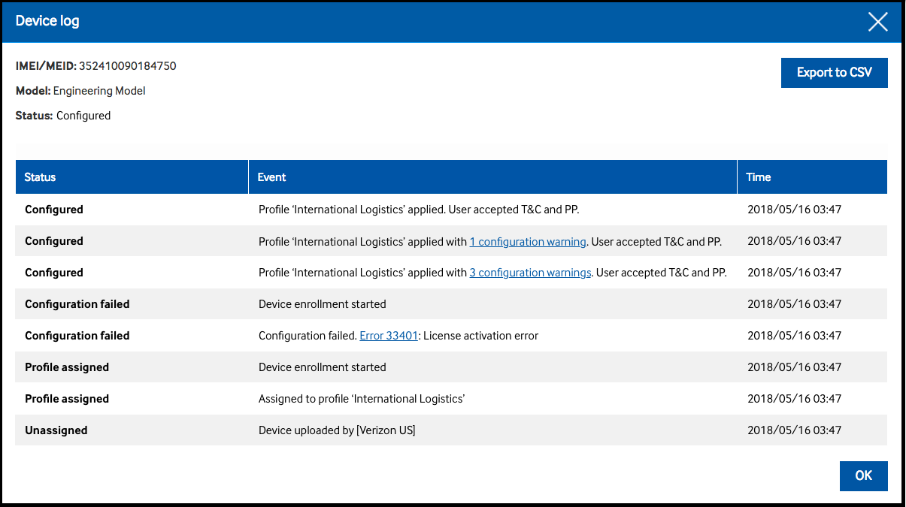
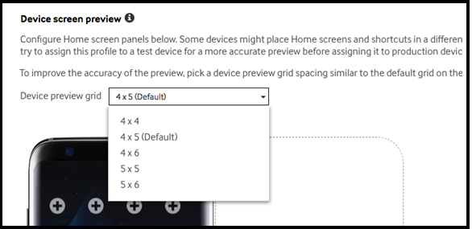
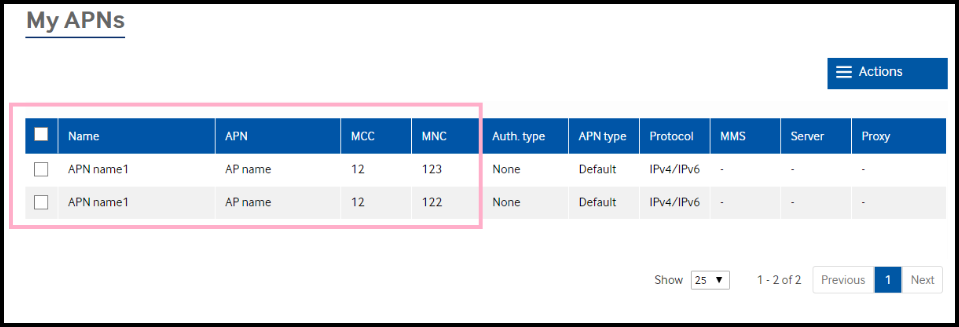
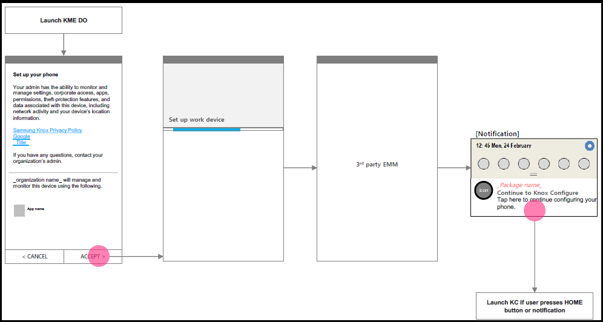

Knox Configure 1.12 release notes
Last updated July 26th, 2023
KME+DO with KC support added
KME added support for Android Enterprise managed device mode in Knox 2.8 (on S8 and higher device platforms). Additionally, Samsung has now completed work for supporting KC + KME + Android Enterprise Managed device mode to increase opportunities for KC. KC can be launched from a KME enrolled device, by either selecting the device’s back key, or from a displayed device notification (as illustrated below).

When using KME with Knox Configure, be careful when unchecking the Leave all system apps enabled checkbox, as this may lead to conflicts with Knox Configure. For example, when setting the Samsung browser homepage, the Knox Configure policy will fail [51010] if system apps are disabled (since system apps include the Samsung browser).
Frictionless customization
Currently, when an error occurs during device enrollment, the enrollment process stops, regardless of the error type, and a failure is reported to the KC server. The current messaging is often inadequate to properly define the scope and severity of the issue that is stopping enrollment.

This implementation of this feature enables an IT admin to better distinguish and categorize enrollment errors and warning messages. Enrollment now continues when a warning occurs, but stops when an error occurs. The Device log now has better descriptions and links to specific warnings and error conditions.
Improved device screen grid definition
Currently, the Home screen grid options do not provide enough customer preferred choices. As a result, new 4x6 and 5x6 options have been included to provide administrators a better selection for a growing set of supported device models (such as the new GalaxyS9+). Additionally, the grid selection drop-down menu has been moved into the Device screen preview field for better logical placement of the grid selection option.

ProKiosk mode enhancements
To date, when Knox Configure updates a device and the device’s ProKiosk mode has already been set by a customized app other than Knox Configure, a failure occurs regardless of the normal or ProKiosk mode profile type. However, if a normal mode profile is used, the Knox Configure update can be completed without a conflict with ProKiosk mode. To remedy this situation, a Knox Configure normal mode profile is now compatible with ProKiosk mode using a customized app with cSDK without a failure.
License key enhancements
To date, a license can be entered only if the Knox Configure License name is unique to all customers. However, there is no way for a user to know if name is truly unique across all customer deployments. To remedy this problem, the License name duplicate check logic has been revised from all customer deployments to an individual customer’s pool of licenses.
Second APN resource with the same parameters now permitted
To satisfy a customer request, a second APN resource with the same APN resource parameters (name, apn, mcc, etc), can now be configured and entered within the Knox Configure console. While adding multiple identical APN resources has been supported on the device-side for some time, it is only with this current release that an identical APN resource can be defined and made available within the KC console.

Wearable Knox Configure (WKC)
Background push updates now permitted
This enhancement enables an IT admin or system integrator to push an updated profile or application to Samsung Gear wearable devices without any related UI displaying on the target device.

This enables the wearable device user to continue to use their device without interruption, as profile or application updates occur in the background.
Frictionless customization
Currently, when an error occurs during wearable device enrollment, the enrollment process stops, regardless of the error type, and a failure is reported to KC server. Additionally, the current messaging is inadequate to properly define the scope and severity of the problem that halted enrollment.

This implementation of this feature enables IT admin to better distinguish and categorize errors and occurs. The device log also better describes the warning or error condition encountered.
Watch face alteration and deletion prevention
This feature addresses requests by IT admins who need a dynamic profile restriction policy option that prevents wearable device users from changing their device’s watch face, once it is configured and set on the device.
Disallow application uninstall
This feature enables an IT admin to configure a list of applications that cannot be uninstalled by the device user post enrollment and deployment. Removing an application from the disallow uninstall app list removes the uninstall restriction, and provides the device user the capability to remove the application from their device. If utilizing a setup edition profile, just a single application is permitted in the uninstall prevention list.
Knox Mobile Enrollment (KME)
KME+DO with KC support added
KME added support for Android Enterprise managed device mode in Knox 2.8 (on S8 and higher device platforms). Additionally, Samsung has now completed work for supporting KC + KME + Android Enterprise Managed device mode to increase opportunities for KC. KC can be launched from a KME enrolled device, by either selecting the device’s back key, or from a displayed device notification (as illustrated below).

When using KME with Knox Configure, be careful when unchecking the Leave all system apps enabled checkbox, as this may lead to conflicts with Knox Configure. For example, when setting the Samsung browser homepage, the Knox Configure policy will fail [51010] if system apps are disabled (since system apps include the Samsung browser).
IBM MaaS360 DO support for KME added
IBM MaaS360 now has Google DO (Work Managed Device) support for KME. IBM has provided Samsung the JSON data they provide Google for DO provisioning.
{"maasRootId":"42","corpId":"12345678","enrollmentMode":"ENROLLMENT","promptForDeviceName":false,"sharedSecret":"Nc3FaVcDe","AT":"U"}
The characters highlighted in red above are new JSON attributes IBM wants to include with their DO support. IBM are using a two-letter key/value with a 500 JSON string character limit.
MDM support for Citrix DO added
With this release, Samsung has included Citrix DO (Work Managed Device) support within the KME DO drop-down menu. The following is a sample JSON:
{
android.app.extra.PROVISIONING_DEVICE_ADMIN_COMPONENT_NAME:
"com.zenprise/com.zenprise.configuration.AdminFunction",
android.app.extra.PROVISIONING_DEVICE_ADMIN_SIGNATURE_CHECKSUM:
"qn7oZUtheu3JBAinzZRrrjCQv6LOO6Ll1OjcxT3-yKM",
android.app.extra.PROVISIONING_DEVICE_ADMIN_PACKAGE_DOWNLOAD_LOCATION:
"https://q127.qckr.net:4443/zdm/worxhome.apk",
android.app.extra.PROVISIONING_ADMIN_EXTRAS_BUNDLE:
{ dpc_server_url: "https://q127.qckr.net" }
}
Activity log now displays and filters devices enrolled with NFC or Bluetooth
To date, IT admins have been unable to see devices in the KME activity log that were added using NFC or Bluetooth. With this release, both NFC and Bluetooth enrolled devices can viewed and separately filtered within the activity log’s Event column, along with those devices added into KME using a typical KME console enrollment.
Reseller Portal
The following reseller portal improvements are available with this release:
Improved MPTS performance
The following reseller portal improvements are available with this release:
- Currently, the reseller portal processes uploads asynchronously. To reduce processing time, messaging for small uploads is bypassed and are processed immediately, reducing the number of messages in the queue and quickening message processing.
- The reseller portal sends multiple batch IDs to the MPTS script. To date, there is a 30 second delay added for MPTS processing of each batch. This delay is eliminated by using MPTS scripts to accept multiple batches.
- The MPTS delay has been reduced from 30 seconds to 5 seconds.
- Another API has been added to the reseller portal to take multiple batch IDs and return device details to the MPTS script.
- The MPTS script has been modified to call the newly added API and process the batches in a multi-threaded manner.
- The reseller portal has added multi-threading while claiming upload events. This ensures 1-2 large uploads do not hold up the queue and add latency to other uploads.
Is this page helpful?